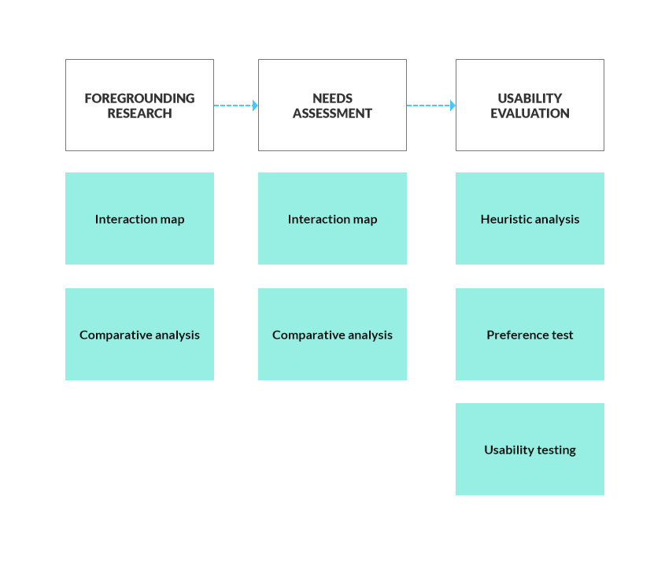
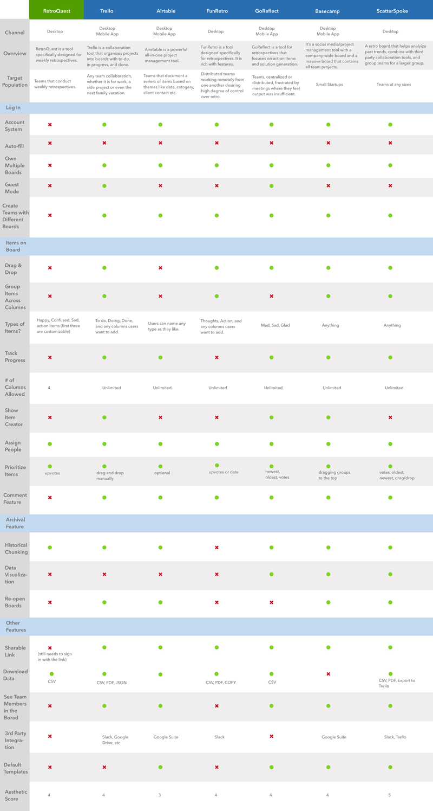

FordLabs RetroQuest
For a course project, I worked in a team of four UX-focused students to provide usability consulting service for RetroQuest, a retrospective meeting-facilitating web application used at FordLabs.

Duration
One semester
Sep - Dec 2018
Type & Role
Course project
Design consultant
Teammates
Alex Fidel
Jenny Sun
Valorie Zhang
Methodologies
Affinity diagramming
Competitive analysis
Contextual inquiry
Solution brainstorming and prioritization
Presentation
THE CHALLENGE
Enhancing post-mortem meeting efficiency for 170 development teams at Ford
RetroQuest is a web application used to run retrospective meetings at Ford. On a weekly basis, 90-170 internal development teams run their retrospecitve meetings on RetroQuest. With only one designer in charge of the user experience of the application, the development team is seeking UX consulting service from our team to boost retro efficiency for internal employees.
Following the course syllabus at 'Needs Assessment and Usability Evalution', our team evaluated the application using diverse research methodologies.
THE PROCESS
Examining the web application via different approaches
According to different research questions, each of us were assigned the project manager of at least one study. Throughout the semester, we gathered both quantitative abd qualitative data to help us generate key recommendations for our clients.

1. Interaction Map
First, to better understand the application, we started by visualizting all possible interactions on the interface to learn how users can engage with the system in different ways.

Interaction map of RetroQuest.
2. Comparative Analysis
Next, I led the team to conduct a thorough analysis with 6 direct (FunRetro, GoReflect, ScatterSpoke) and partial (Trello, Basecamp, Airtable) competitors to see what they did well that can be receommended to RetroQuest.
After the analysis, we identified six great features from the competitors: adding an account system, implement vote limit, group similar cards, display creator name, include visual analytics.

Comparative analysis results.
3. User Interviews
In order to understand how users feel using RetroQuest, we conducted 5 semi-structured interviews with different roles at Ford. The interview protocol can be found here.
We were excited to find that some user frustrations aligned with our previous findings from interaction map and comparative analysis.
Highlighted quotes from the interviewees.
We also developed personas to illustrate the major user using the application, their motivations and frustrations.
A set of personas derived from interview analysis.
4. Survey
With findings from previous research, we have gathered several theories and assumptions that could help improve the application. To see whether these considerations are really needed by the majority of the users and their attitudes about them, we distributed a survey to employees at Ford.
Within 5 days, we received 81 responses. I then visualized the survey data using Tableau and excel to help interpret the results.
I used Tableau to generate 5 of the above charts from survey data.
6. Heuristic evaluation
We constructed a set of 13 heuristics selected from Nielsen(1995), Farooq et al. (2008), and Hermann (2009) for user interface and computer-supported cooperated work to examine RetroQuest. The heuristics are:
- Visibility of system status.
- Match between system and the real world.
- Communication around shared work should be able to happen in real time as the work is done.
- User control and freedom.
- Visibility of system status.
- Consistency and standards.
- Error prevention.
- Recognition rather than recall.
- Support flexibility in the granularity of planning.
- Aesthetic and minimalist design.
- Help users recognize, diagnose, and recover from errors.
- Help and documentation.
- Support the big picture and visualization of rich material.
- Support merges and document them.
In the end, we identified 18 violations, with 5 of them rated as most severe.
Results of the heuristics evaluation.
7. Preference Test
So far, we have identified a number of UX issues and come up with design recommendations for them. Without putting these ideas into test, however, we wouldn't know if the proposed changes address users' desires and improve usability. Therefore, we took the chance of a four-day period to conduct a small preference test for two proposed changes:

(Left) The old design: users cannot take off a vote. (Right) The proposed design: added undo feature for the upvote button.

(Left) The old design: no salient way to infer meeting progress. (Right) The proposed design: added undo feature for the upvote button.
By use of modified SUS (System Usability Scale) questions, we gauged users' preference between the two design options.
Different from other studies we have done, the results were rather confusing -- we found no strong preference for one version over another, for both questions! After referring to the free text entries and reexamining our methodology, we found that users were mostly critiquing the aesthetics of the designs, instead of the features usability of them.
Although we did not succssfully validate our assumptions, we have learned a lot from this experience. If we had the chance to do the test again, we would:
- Use lower-fi mockups so participants focus less on the visual elements.
- Distribute the survey to more participants for more precise data.
- Conduct face-to-face interviews as well to ask more follow-up questions for deeper understanding.
8. Usability Test
At this point, we have only examined issues on the desktop browser view. To understand how RetroQuest performs on the mobile view, as well as users' experience on the new interface in the archive page, we conducted a series of usability test with 5 users.
Each session lasted 30-40 minutes. On their own mobile phones, the participants performed 7 common tasks following a standard retrospective procedure. On the desktop browser, the participants performed one task with two subtasks to check historic board details. The whole testing script and task details can be accessed here.
We followed the aboved process to conduct usablity tests.
We found two usability issues specifically related to the mobile view:

(Left) Users had to scroll down to make sure a card is created. (Right) Users had to switch to different tabs from action items to make sure all thoughts are cleared after hitting 'End Retro'.

(Left) After typing a thought, users tended to click the ‘down arrow’ in the extreme bottom left. They attempted to close the keyboard in doing so, thinking a submission button is hidden behind it. (Right) On iOS, ‘Return’ key on the bottom right submits a thought, but users looked for an ‘Enter’ key instead.
FINAL DELIVERABLE
Our research project in a nutshell
At the end of the project, we created a video summarizing our key research findings and a spreadsheet of actionable items derived from the eight studies that we have conducted. I am excited to see RetroQuest become more usable and evolve to improve meeting efficiecy within the company!